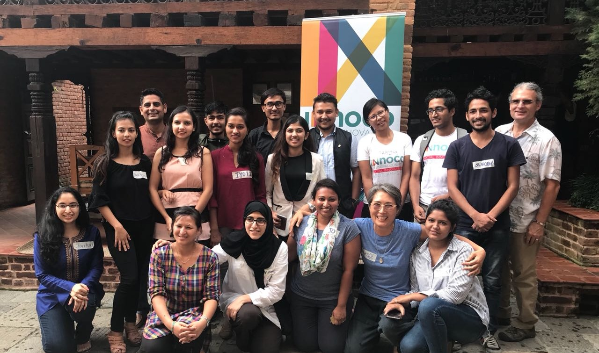

UAE-Nepal-Connect (UNC) Social Innovation
After the 2015 earthquake, youth in two countries built relationships that outlasted the program that introduced them.

In 2016, two Dubai-based art and design educators went to Nepal — not with a program, but with a question.
Joanne Renaux and Yunsun Chung travelled as action research, carrying a question about what young people there needed after the 2015 earthquake.
What they built over the next three years, with an international team of volunteers, was “ME=WE, Cultivating Change.” It began with a four-day youth camp and the slower work of building relationships with people already doing this — many local NGOs, among them one led by Abdus Miya, and a youth enterprise. That groundwork led, in June 2017, to a nine-day Social Innovation Bootcamp at the ICA Training Centre in Lalitpur, and to the years of accompaniment around it. Youth from the UAE and Nepal worked side by side, and the bootcamp closed with social project pitches to a panel of community judges.
Alongside it ran something quieter: seven mentors, recruited from Nepal and abroad, each matched with a young person. Not oversight — relationship. Guests came through too, from many fields — among them Mahabir Pun, the social entrepreneur who brought the internet to Nepal’s mountain villages, whose visit left a particular mark on the young people in the room.
The part that mattered most wasn’t the pitches. Ideas became real work: a literacy and reading program in a rural community, a homestay for women facing domestic violence, new approaches to bee and fruit farming, a hydroponic farm, a waste management system, and youth empowerment in villages long treated as untouchable. Some launched. Some are still going. The Nepali participants reorganized themselves into an independent, youth-led NGO. Several became entrepreneurs — and several appear elsewhere on this site, as collaborators, not alumni.
“What we learn in schools is not everything. I want kids and young adults to learn life skills that will bring out the best person that they can be.”
A participant
Relationships were the actual output. Everything else was the occasion for them.


Lalitpur, June 2017 — closing with pitches to community judges.
Each matched with a young person — relationship, not oversight.
Nepali participants reorganized into an independent organization.